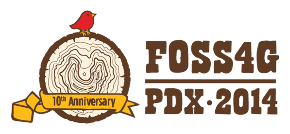

Andrew Murdoch, Leidos
Josh Sisskind, Leidos
general overview comparing Oracle spatial to PostGIS
versioning handled by GeoGig / PostGIS / desktop client (QGIS/ArcMap/etc.)
GRASS GIS promo video from 1987
(narrated by William Shatner!)
Import fiona
with fiona.open(path) as src:
first= next(src)
Import rasterio
with rasterio.open(path) as src:
data = src.read()
rasterio.features.shapes()
rasterio.features.rasterize()
rasterio.warp.reproject()
var foo = Object.create(HTMLElement.prototype)
foo = CreatedCallback = function(){
this.map = …
this.map.setView…
}
map = registerElement(“foo”,{prototype.foo})
Terraformer.point()
ST_UNION(ST_CLIP(...)))
Geoparsing completed using references within text to places